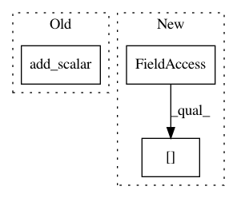

f9467596438f4059f5b05a4e49232854ff404030,dl/callbacks.py,LoggerCallback,on_batch_start,#LoggerCallback#Any#,98
Before Change
meter.AverageValueMeter()
def on_batch_start(self, state):
self.loggers[state.loader_mode].add_scalar(
"data time", time.time() - self.time, state.step)
def on_batch_end(self, state):
lm = state.loader_mode
state.bs = state.bs or state.target.shape[0]
After Change
lambda: meter.AverageValueMeter())
def on_batch_start(self, state):
state.batch_metrics["data time"] = time.time() - self.time
def on_batch_end(self, state):
lm = state.loader_mode
In pattern: SUPERPATTERN
Frequency: 3
Non-data size: 3
Instances
Project Name: Scitator/catalyst
Commit Name: f9467596438f4059f5b05a4e49232854ff404030
Time: 2018-10-04
Author: scitator@gmail.com
File Name: dl/callbacks.py
Class Name: LoggerCallback
Method Name: on_batch_start
Project Name: Scitator/catalyst
Commit Name: f9467596438f4059f5b05a4e49232854ff404030
Time: 2018-10-04
Author: scitator@gmail.com
File Name: dl/callbacks.py
Class Name: PrecisionCallback
Method Name: on_batch_end
Project Name: kengz/SLM-Lab
Commit Name: c9d0af542668df6fcaa51b5298237ea4a351f101
Time: 2020-02-23
Author: kengzwl@gmail.com
File Name: slm_lab/agent/__init__.py
Class Name: Body
Method Name: log_tensorboard